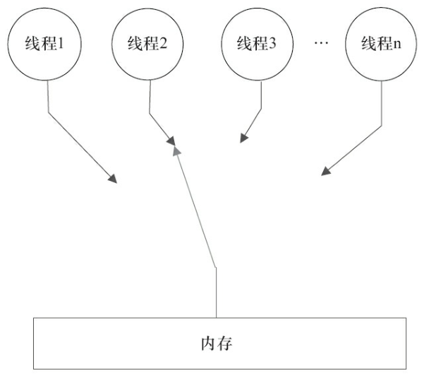
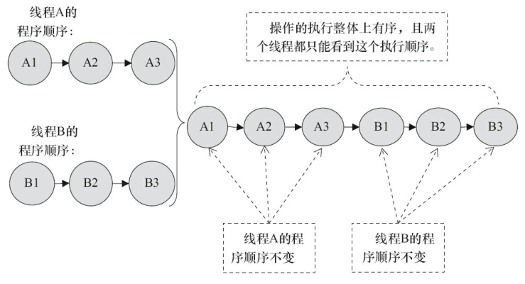
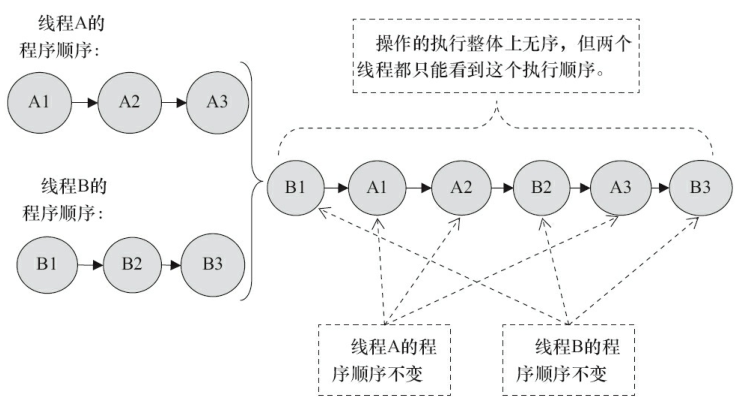

并发编程-0-并发模型
并发的基本问题
并发编程中的两个基本问题：线程通信和线程同步
通信：是指线程之间以何种机制来交换信息。
线程之间的通信机制有两种：
内存共享模型
线程之间共享程序的公共状态，通过写读内存中的公共状态进行隐式通信。
消息传递模型
线程之间没有公共状态，线程之间必须通过发送消息显示进行通信。
同步：是指程序中用于控制不同线程间操作发生相对顺序的机制。
内存共享模型
同步是显示进行的，程序员必须显示指定某个方法或某段代码需要在线程之间互斥执行。
消息传递模型
消息发送在消息接收之前，同步是隐进行的。
Java的并发采用的是共享内存模型，Java线程之间的通信是隐式进行，整个通信过程对程序员完全透明。
并发模型的分类
现在处理器使用写缓冲区临时保存向内存写入的数据。写缓冲区可以保证指令流水线持续运行，它可以避免由于处理器停顿下来等待向内存写入数据而产生的延迟。同时，通过以批处理的方式刷新写缓冲区，以及合并写缓冲区对同一内存地址的多次写，减少对内存总线程的占用。虽然写内存区有那么多好处，但是每个处理器上的写缓冲区，仅仅对它所在的处理器可见。这个特性会对内存操作的执行顺序产生重要的影响：处理器对内存读写操作的执行顺序不一定与内存实际发生的读写操作顺序一致。
顺序一致性
顺序一致性内存模型是一种理论参考模型，在设计的时候，处理器的内存模型和编程语言的内存模型都会以顺序一致性内存模型作为参照。
数据竞争与顺序一致性
数据竞争
数据竞争的定义：在一个线程中写入一个变量，在另外一个线程读同一个变量，而且写和读没有通过同步来排序。
JMM对正确同步的多线程程序的内存一致性做了如下保证。
如果程序时正确同步的，程序的执行将具有顺序一致性——即程序的执行结果与该程序在顺序一致性内存模型中的执行结果相同。
顺序一致性内存模型
顺序一致性内存模型有两大特性
- 一个线程中的所有操作必须按照程序的顺序来执行
- 所有线程都只能看到一个单一的操作执行顺序。在顺序一致性内存中，每个操作都必须原子执行且立刻对所有线程可见。
顺序一致性内存模型图如下所示：

从概念上，顺序一致性模型有一个单一的全局内存，这个内存通过一个左右摆动的开关可以连接到任意一个程序，同时每一个线程必须按照顺序来执行内存读写操作。在任意一个时间点最多只能有一个线程可以连接到内存。当多个线程并发执行时，图中的开关装置能把所有线程的所有内存读写操作串行化。
线程经过锁同步后的顺序一致性模型：

线程未同步的顺序一致性模型：
